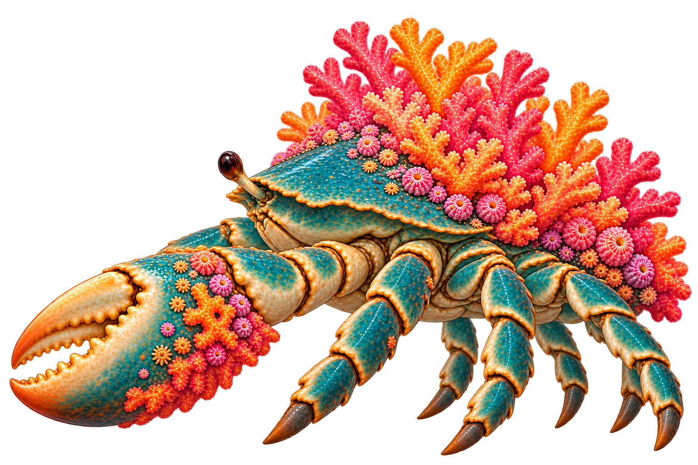
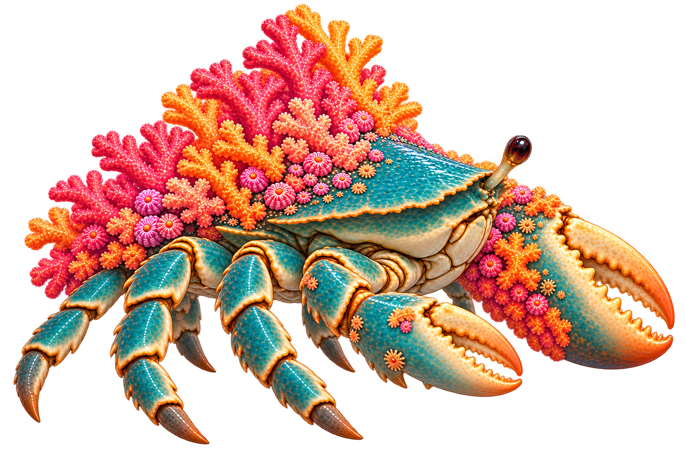
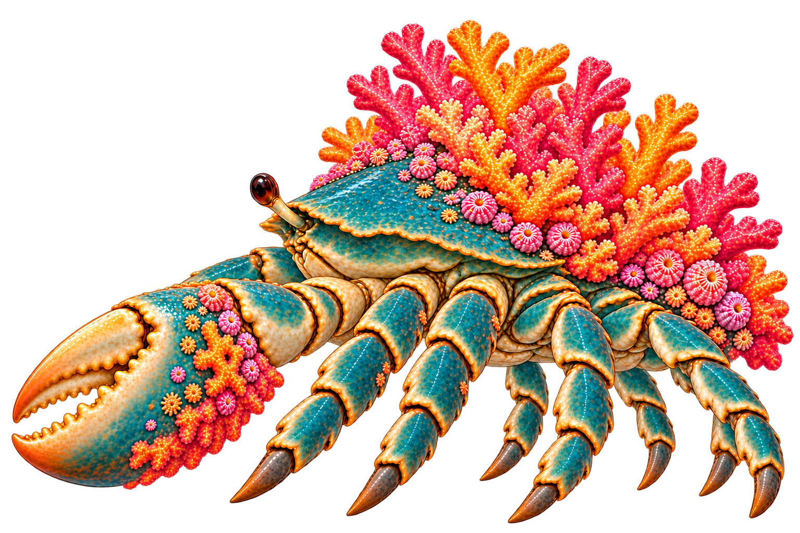
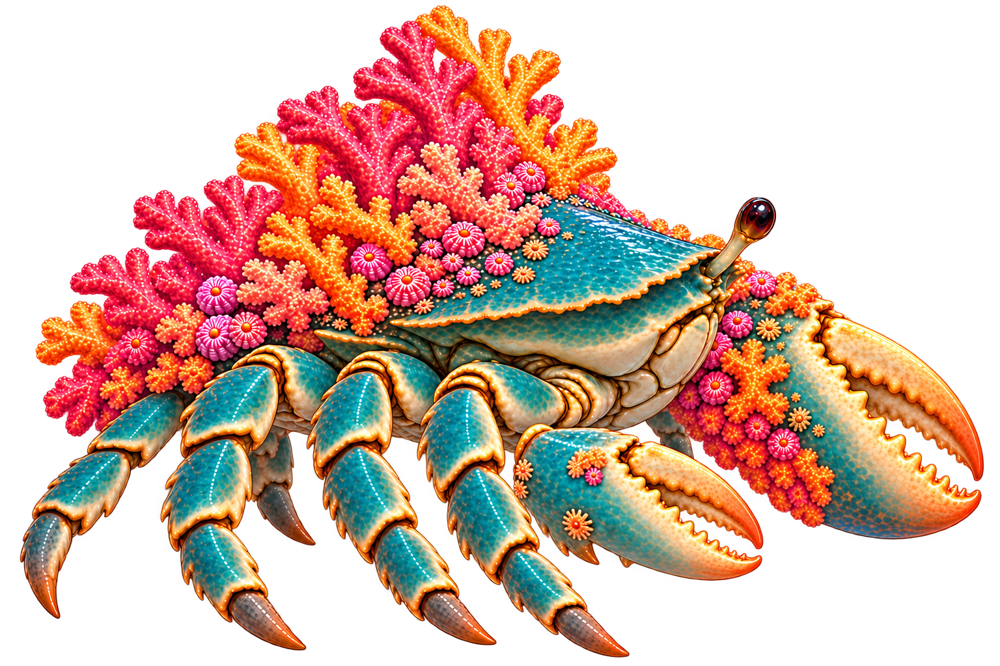

Not approved. Left-facing shows the large near claw; right-facing shows the small near claw and large far claw. These are independent paintings, not mirrored frames.
Original left-facingOriginal right-facing

New left: more visible staggered feet, but only three clear near-side walking chains; remaining roots are obscured. Camera still oblique.

New right: small claw correctly near, large claw far. Only three near walking chains are clear; eight total leg chains are not proven.
Four near-leg revisions

Left V2: four large near walking chains visible. New front leg length and concealed far roots need matching.

Right V2: fourth near leg added behind small claw. Far legs and claw-arm overlap remain unresolved.
Next: establish all far-leg roots and fixed segment lengths, then reconcile coral landmarks and camera angle before animation.